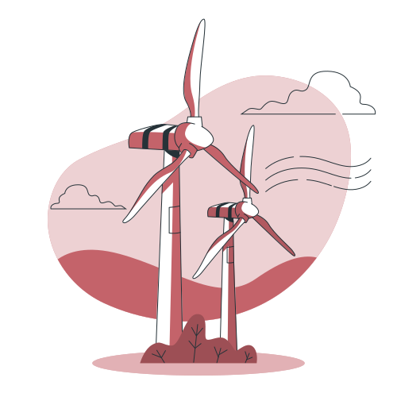

Working with EOS Group
I collaborated with EOS Group, an Australian energy client, and an international team across Australia, the UK and Malaysia to research renewable-energy markets, assess potential partners and funding schemes, and develop international rollout recommendations.
